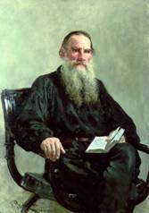

LỜI GIỚI THIỆU

ản Sonata Kreutzer được viết bắt đầu năm 1887, hoàn thành năm 1889. Đã bị kiểm duyệt cấm xuất bản năm 1890, song lệnh cấm sau đó được đích thân Nga hoàng Alekandr III hủy bỏ. Trước khi được chính thức xuất bản ở Nga năm 1891, nó đã được lưu hành hàng ngàn bản dưới dạng in thạch bản và được dịch ra một số tiếng nước ngoài.
Tác phẩm gây xôn xao dư luận vì đã đưa ra những vấn đề mà trước đó chưa bao giờ được nói đến một cách công khai.
Một người bạn của Tolstoy - Nikolai Strakhov, triết gia đồng thời cũng là nhà phê bình văn học - đã viết cho nhà văn về tác phẩm này: “Anh chưa bao giờ viết cái gì ghê gớm và ảm đạm hơn tác phẩm này”. Anton Chekhov tuy có những nghi ngờ về các quan điểm liên quan đến y học của Tolstoy, nhưng đã khen ngợi nghệ thuật của các tác phẩm và cho rằng nó đã “khơi dậy suy nghĩ” nơi người đọc. Ivan Bunin sau khi đọc tác phẩm cũng đã viết thư cho Tolstoy ca ngợi và xin phép được đến gặp văn hào.

LEV NIKOLAYEVICH TOLSTOY
Văn hào Nga Lev Nikolayevich Tolstoy được biết đến như tác giả của bộ tiểu thuyết sử thi vĩ đại “Chiến tranh và hòa bình” và rất nhiều tác phẩm khác. Ông sinh ra tại điền trang Yasnaya Polyana thuộc tỉnh Tula vào ngày 28 tháng 8 năm 1828 trong một gia đình đại quý tộc. Tám mươi hai năm sau, đêm 27 rạng ngày 28 tháng 10 năm 1910, ông đã bí mật từ bỏ ngôi nhà thân yêu của mình, gửi lại cho vợ bức thư chia tay, cảm ơn bà vì 48 năm chung sống và quyết định đi tìm sự yên bình và giải thoát khỏi cuộc sống xa hoa mà ông đang sống. Chuyến tàu mà ông lên để ra đi chỉ đưa ông tới được ga xép Astapovo, cách Tula khoảng 100 km. Ngày 31 tháng 10 ông lâm bệnh, được đưa vào ga Astapovo và mất ở đó ngày 7 tháng 11 năm 1910.
Tolstoy là một trong số hiếm hoi các nhà văn Nga thế kỷ 19 đã sống đến tuổi ngoại bát tuần. Suốt đời, ông luôn là con người tìm kiếm lẽ sống, không bao giờ bằng lòng với những gì mình đã có, đã đạt được, và điều đó được thể hiện qua những tác phẩm của nhà văn. Có thể nói những tiểu thuyết lớn của ông đều là những cái mốc đánh dấu những bước chuyển quan trọng trong cuộc đời và sự nghiệp sáng tác. Ông còn là một trong số các nhà văn mà cuộc đời của chính mình được đưa vào trong tác phẩm nhiều nhất.
Ba mươi năm cuối đời, kể từ sau khi nhà văn cho ra đời tiểu thuyết “Anna Karenina” (1879), Tolstoy trải qua thời kỳ mà người ta gọi là khủng hoảng đạo đức. Đây là thời kỳ nhà văn trải qua những sóng gió của cuộc sống gia đình, là thời kỳ ông luôn bị ám ảnh bởi cái chết và những ăn năn, sám hối về những lỗi lầm của bản thân cũng như của tầng lớp quý tộc mà ông là đại biểu. Đây cũng là thời kỳ ông đưa ra lý thuyết tự hoàn thiện bản thân, thời kỳ ông viết những tác phẩm nổi tiếng như “Cái chết của Ivan Ilich”, “Đức cha Sergei”, “Phục sinh”.
“Bản Sonata Kreutzer” cũng được viết trong thời kỳ này, (bắt đầu năm 1887, hoàn thành năm 1889). Nó bị kiểm duyệt cấm xuất bản năm 1890, song lệnh cấm sau đó được đích thân Nga hoàng Alexandr III hủy bỏ. Trước khi được chính thức xuất bản ở Nga năm 1891, nó đã được lưu hành hàng ngàn bản dưới dạng in thạch bản và được dịch ra một số tiếng nước ngoài. Tác phẩm gây xôn xao dư luận vì đã đưa ra những vấn đề mà trước đó chưa bao giờ được nói đến một cách công khai. Một người bạn của Tolstoy - Nikolai Strakhov, triết gia đồng thời cũng là nhà phê bình văn học - đã viết cho nhà văn về tác phẩm này: “Anh chưa bao giờ viết cái gì ghê gớm và ảm đạm hơn tác phẩm này”. Anton Chekhov tuy có những nghi ngờ về các quan điểm liên quan đến y học của Tolstoy, nhưng đã khen ngợi nghệ thuật của tác phẩm và cho rằng nó đã “khơi dậy suy nghĩ “ nơi người đọc. Ivan Bunin sau khi đọc tác phẩm cũng đã viết thư cho Tolstoy ca ngợi và xin phép được đến gặp văn hào.(1)
Có thể nói “Bản Sonata Kreutzer” đã cho thấy một Tolstoy dữ dội khác với Tolstoy trong “Chiến tranh và hòa bình”, “Anna Karenina” và nhiều tác phẩm khác. Tuy nhiên, chủ đề kiếm tìm lý tưởng đạo đức trong sự giao hòa với đời sống tự nhiên của nhân dân lao động, với thiên nhiên vốn xuyên suốt sự nghiệp sáng tác của nhà văn, cũng như nghệ thuật thiên tài của nhà văn trong mô tả tâm lý con người - “phép biện chứng tâm hồn” - vẫn được thể hiện rõ nét trong tác phẩm này.
Người dịch
Tinh hoa văn học của nhân loại nào cũng cần được khám phá và tái khám phá. Mỗi tác phẩm lớn là một xứ sở kỳ diệu và mỗi lần ta tìm đến là thực hiện một cuộc phiêu lưu hoan lạc.
Dịch thuật, giới thiệu và biên khảo về những tác phẩm tinh hoa sẽ mở ra các lối cổng dẫn vào những cảnh tượng văn chương khác nhau, qua những không gian và thời gian vừa hiện thực vừa kỳ ảo.
Khát vọng hiểu biết và vui thú trong đời là bản tính của con người ở mọi nơi và mọi thời. Các tác phẩm văn chương thật sự vĩ đại đều mang lại hai điều đó: vui thú và hiểu biết. Nhưng hiểu biết là niềm vui hiếm khi tự đến một cách dễ dãi. Cần đón đợi và hồi đáp.
Mọi tác phẩm tinh hoa cần được đón đợi và hồi đáp trong niềm hân hoan có tên là “ĐỌC”.
ĐỌC. Cầm sách lên và đọc. Trong sách có bạn hiền, có người đẹp, có mọi thứ. Do vậy, chúng tôi chủ trương TỦ SÁCH TINH HOA VĂN HỌC, xem đó như cửa ngõ của hiểu biết và niềm vui.
CÓ NĂM CỬA:
• Kiệt Tác:
Mỗi Kiệt tác sẽ được dịch trọn vẹn và giới thiệu cả tác giả lẫn tác phẩm trong phối cảnh văn hóa những đặc điểm thiết yếu.
• Tuyển:
Tuyển chọn những tác phẩm ngắn của một tác giả, một nền văn học hay một chủ đề mang tính điển mẫu (thuộc vòng đời hay vòng mùa)
• Kiến Thức:
Những kiến thức mà người đọc hiện đại cần có: trào lưu văn học, các nền văn học, thể loại… được trình bày gọn nhẹ, dễ tiếp nhận.
• Nghiên Cứu:
Các công trình chuyên sâu về một vấn đề văn học, một tác giả thiên tài, lý luận phê bình…
•Mới:
Về các hiện tượng văn học mới xuất hiện của nước ngoài đang gây chú ý hoặc đoạt các giải thưởng lớn… Mong ước chúng tôi là TỦ SÁCH TINH HOA VĂN HỌC sẽ tiến bước bền vững và được đón nhận thân tình.
Tủ sách được biên soạn và dịch thuật từ những nhà giáo, dịch giả và nhà nghiên cứu có uy tín và tâm huyết với văn chương.
NHẬT CHIÊU
Chú thích
1. Các ý kiến của Strakhov, Chekhov và Bunin được trích theo: Wasiolek Edward, Tolstoy’s Major Fiction. The University of Chicago Press, 1978. Tr.215.
Bản tiếng Việt © 2011 Công ty Sách Phương Nam & Trần Thị Phương Phương
dịch từ nguyên bản tiếng Nga: Крейцерова соната.
Nguồn: Л. Н. Толстой. Собрание сочинений в восьми томах. Т. 7. М., “Лексика”, 1996. Đối chiếu với bản dịch tiếng Anh The Kreutzer Sonata trong cuốn: The Works of Leo Tolstoy. Black’s Reader Service Company, Roslyn, New York, 1928)
Sách được thực hiện bởi PHUONG NAM BOOK. Chuyển về ebook bởi ROMANCE BOOK.
Ebook được làm phi lợi nhuận. Hãy mua sách trong điều kiện có thể.
fb.com/romanbook